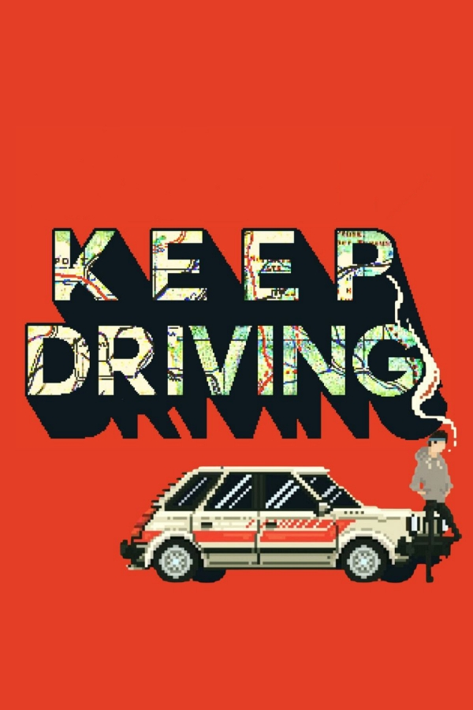

Keep Driving
Every archived year-end list appearance, including placement and points earned.
About the Game
It’s the early 2000’s, and you’ve just bought your first car. A long, slow summer lies ahead. Hearing about a festival on the other side of the country, you fire up your engine, plot a course on your map, and hit the road. How, if you get there at all, is up to you.Procedurally generated pixel art open worldKeep Driving is a management RPG about slowly making your way through a procedurally generated pixel art open world. Pick up hitchhikers with their own personalities and stories; upgrade, customize and repair your car. Solve challenges on the road using a unique turn-based ‘combat’ system, using your own skills and whatever’s lying around in the glovebox to make it through. At the end of your road trip, return back to the beginning and see what happens if you had followed a different path. There are multiple endings, with each taking about 1-4 hours to complete. Immerse yourself in the land through its highways, dirt tracks, and calm country roads. And remember to enjoy the ride. You're young and don't have much to lose. Features:A procedurally generated pixel art world to explore one road at a time. A nostalgic early 2000s setting with an emphasis on the analogue . Use turn-based ‘combat’ to solve situations (like getting stuck behind a tractor). Pick up misfits, oddballs and lost souls as you go. Collect songs and listen to a mix CD of local Swedish indie bands. Multiple endings to unlock when you return to the road. Inspired by Oregon Trail II, FTL, Two Lane Blacktop, Paris Texas, Jalopy, Gloom Haven, The 7th Continent, and the developer’s lives. About the DeveloperY/CJ/Y is an indie game studio based in Gothenburg, Sweden, consisting of Josef Martinovsky and Christopher Andreasson. Previous projects include The Aquatic Adventure of the Last Human, Sea Salt and POST VOID.
| Released | 2025-02-05 |
|---|---|
| Developer | YCJY Games |
| Publisher | YCJY Games |
| Genres | Adventure, RPG, Simulation, Casual, Indie |
| Platforms | PC |
SingleplayerSteam AchievementsSteam CloudAtmosphericRPGOpen World2DExplorationPixel GraphicsCharacter CustomizationMultiple EndingsDriving
Game information provided by RAWG.
Points by Year
List History
| Year | Source | List | Placement | Points |
|---|---|---|---|---|
| 2025 | Polygon | The 50 best games of 2025, as chosen by Polygon | 30 | 1 |